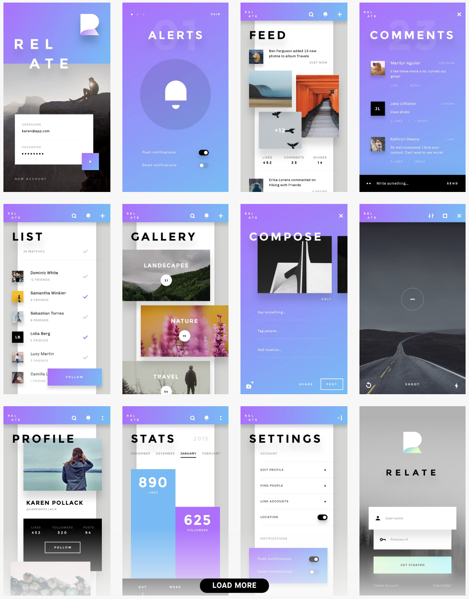
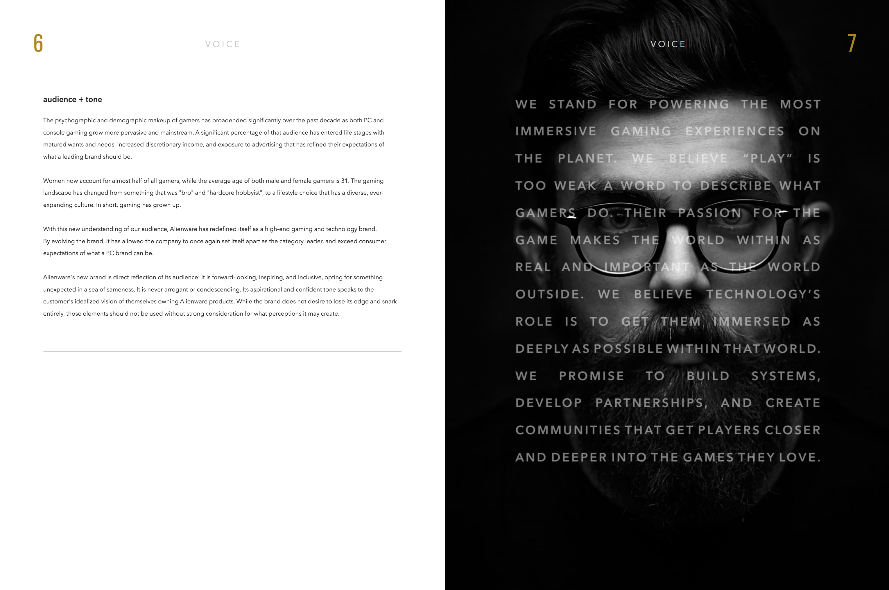

Step 1: Inspiration
The first step I took when creating this project was looking for inspiration. I look for inspiration before every project I start. I looked at Alienwares website because I am designing a new UI kit for them so I want to make sure that I fit their style. I also looked at Alienwares branding guidlines to make sure that any ideas I had would fit. Lastly I looked at other UI kits I found online to see if I could find any inspiration in them. Pictured below is a example of a UI kit I found and used for inspiration during this project.
Fitting the Branding Guide
For this projoect I had to make sure I was matching Alienwares design style and staying in their branding guidelines because I was acting as if I was designing for them. This was challenging because it did not give me much creative freedom and Alienware has a very simple style. This is when I decided to keep everything monocromatic to fit the companies style, which is also why this website is monocromatic. Every new element I made for their UI kit had to be true to the companies branding guide. The image above is one of the pages from their branding guidelines.
